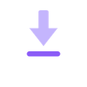

Save what already happened.
ClippiBoy keeps the last minutes of your game in memory. When something worth keeping happens, press a key: the clip is saved from before you pressed it, with every sound on its own track.
Turn Discord down after the fact.
Most recorders flatten everything into one track the moment they record. ClippiBoy keeps the game, each app you pick and your microphone apart, all the way into the saved clip.
So when your friend is too loud over the best play of the night, you open the clip and move one slider. No video editor, no second recording.
Per-app audio needs Windows 11. Output devices and microphones work on Windows 10 too.
Everything around the clip
- Ready in a second or two
- One hardware encoder runs all the time (NVIDIA, AMD or Intel). Saving cuts the finished video out of memory, so nothing is encoded twice and your game keeps its frame rate.
- Edit inside the app
- Name, description, game, the volume of every track and a frame-accurate trim. Changed your mind? Undo the trim and the whole clip is back.
- Export to a size
- Need it under 10 MB for a chat? Pick the size and ClippiBoy works out bitrate and resolution so it fits, and stays sharp.
- Recordings
- Start and stop by hand for as long as your disk allows, while the replay buffer keeps running next to it.
- Screenshots
- Their own hotkey, their own gallery, and an editor for cropping, marking and blurring that never touches the original.
- A console over your game
- Open it with AltC without leaving the game: buffer status, frame rate, audio levels and your latest clips.
- A banner, not a pop-up
- A small overlay confirms each saved clip. It never takes focus, so your next keypress still goes to the game.
- Knows what you're playing
- Games are detected by their process. Clips are sorted by game, and the buffer can run only while you play.
- Out of the way
- Lives in the tray, starts with Windows if you like, and updates itself with one click, never in the middle of a recording.
Five keys to remember
- Save clipCtrlShiftS
- Buffer on or offCtrlShiftB
- ScreenshotCtrlShiftP
- Start or stop a recordingCtrlShiftR
- Open the consoleAltC
All of them can be changed in the settings, even to a single key like F9.
On your Stream Deck
The plugin puts ClippiBoy's four buttons on real keys, and the keys show what's going on: how much is in the buffer, whether it's running, how long a recording has been going.
Double-click the downloaded file and the Stream Deck software installs it. Then turn on Settings → Stream Deck in ClippiBoy. Nothing to type, and nothing reachable from outside your PC.
Download the plugin
1:47Save clip- Screenshot
- onReplay buffer
- 12:34Recording
Getting started
- Run the installer. It installs for your user only, so you don't need admin rights.
- Let it fetch ffmpeg once. On first start ClippiBoy downloads about 80 MB and checks it against a fixed checksum. The buffer already runs while that happens.
- Play. When something happens, press CtrlShiftS. The clip is in your clips folder a second later.
You need
- Windows 10 or 11, 64-bit
- WebView2, which Windows 11 already has and Windows 10 gets through Windows Update
- A graphics card with a video encoder helps; without one ClippiBoy falls back to the CPU